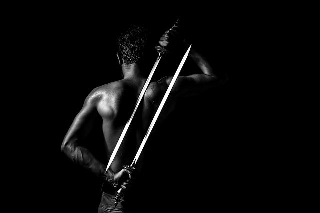

Zawisza Czarny
z Garbowa herbu Sulima


Ciekawostki
Z początku nazywany był Sulimczykiem ze względu na swój herb, dopiero potem zaś zyskał przydomek Zawiszy czarnego nie, tak jak wszyscy myślą, ze względu na pancerz w jakim walczył, a na jego ciemniejszą karnację i czarne włosy.
Pierwsza historyczna wzmianka na temat Zawiszy pochodzi z 1397 roku z akt sądowych w których zanotowano go jako zwycięzcę turnieju który odbył się na Wawelu.
Ważne jest by pamiętać, że od początku nie był rycerzem, ale dopiero po przejściu szczegółowego treningu obejmującego zasady walki pieszej, konnej, strategii wojennej i oczywiście prawdamy wiary katolickiej, które w tamtych czasach musiał znać każdy rycerz w Europie, został pełnoprawnym rycerzem.
Jego sława jako honorowego i sprawiedliwego rycerza znalazła odbicie w języku polskim jako znane powiedzenie: „Polegać jak na Zawiszy” które znaczy całkowicie komuś ufać.
Był on wierny nie jednemu, a dwóm władcom: władcy Węgier - Zygmuntowi Luksemburczykowi i królowi Polski - Władysławowi Jagielle. Z tego względu został zaufanym pośrednikiem w ich kontaktach i przyczynił się do polepszenia się stosunków pomiędzy oboma narodami.
Od jego syna i wnuczki w linii prostej wywodzą się znamienite postacie jak: Bogusław Radziwiłł (bohater „Potopu”), hetman Stanisław Koniecpolski, a także Henryk „Hubal” Dobrzański.